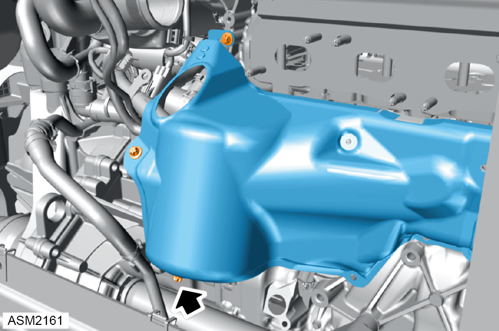

Knock Sensors - 4 Cylinder
Print
Operation Code: 17.06.02-02
Removal
- Disconnect battery. Refer to procedure.
- Remove catalytic converter. Refer to procedure.
- Remove bootbox access panel. Refer to procedure.
- Remove bolts (x4) securing heatshield to engine. Torque 8 Nm.
- Remove heatshield.
- Remove bolts (x4) securing heatshield to engine. Torque 8 Nm.

- Remove bolts (x3) securing heatshield to engine. Torque 8 Nm.
- Remove heatshield.
- Remove bolt (4) securing heatshield (5) to engine. Torque 8 Nm.
- Release and remove heatshields (5 and 6).
- Mark position of knock sensors (A16/1 and A16/2) on crankcase.
- Disconnect harness connectors (7) (x2) from knock sensors.
- Remove bolts (8) (x2) securing knock sensors to crankcase. Torque 20 Nm.
- Remove knock sensors.
Installation
- Installation is the reverse of removal procedure except for the following:
NOTE: If renewing knock sensors, transfer marking of installation position from old knock sensors.
- After installation perform a diagnostic read and clear error memory using Lotus Insight tool.